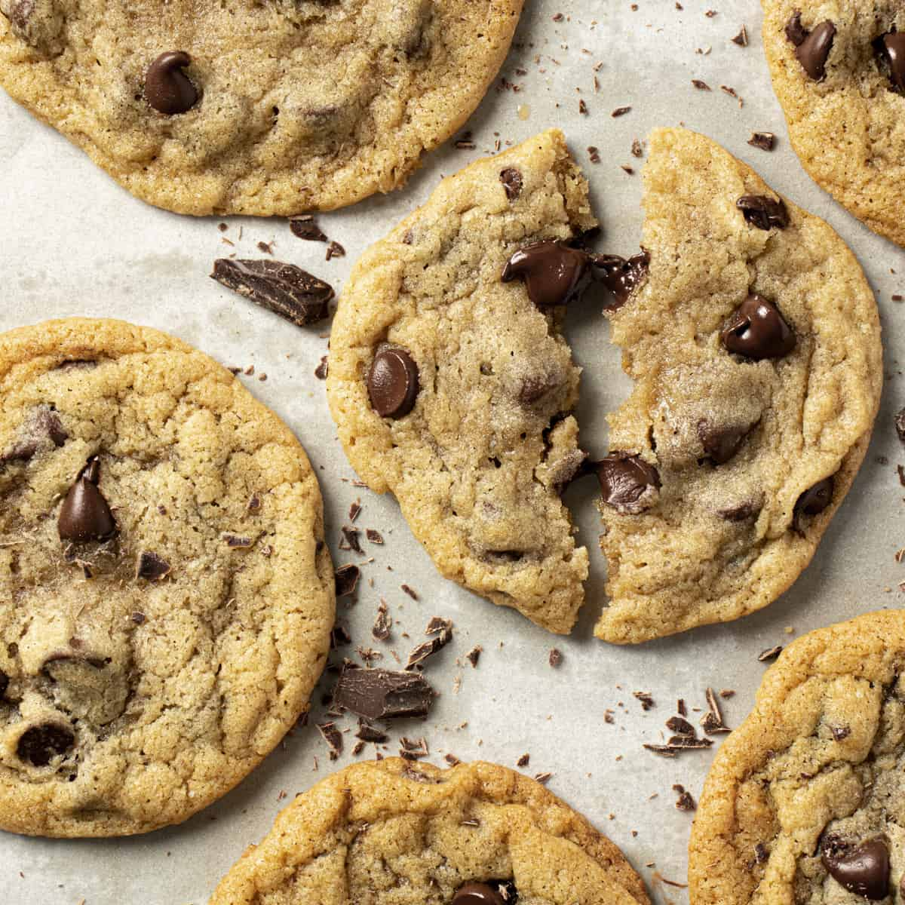

Classic Chocolate Chip Cookies

Summary:
A chocolate chip cookie is a drop cookie that features chocolate chips or chocolate morsels as its distinguishing ingredient. Chocolate chip cookies are claimed to have originated in the United States in 1938, when Ruth Graves Wakefield chopped up a Nestlé semi-sweet chocolate bar and added the chopped chocolate to a cookie recipe; however, historical recipes for grated or chopped chocolate cookies exist prior to 1938 by various other authors.
URL: Classic Chocolate Chip Cookies
Ingredients
- 1 cup (2 sticks) unsalted butter, softened
- 3/4 cup granulated sugar
- 3/4 cup packed brown sugar
- 1 teaspoon vanilla extract
- 2 large eggs
- 2 1/4 cups all-purpose flour
- 1 teaspoon baking soda
- 1/2 teaspoon salt
- 2 cups semisweet chocolate chips
- 1 cup chopped nuts (optional)
Steps
- Preheat the oven to 375°F (190°C). Line baking sheets with parchment paper or silicone baking mats.
- In a large mixing bowl, cream together the softened butter, granulated sugar, brown sugar, and vanilla extract until light and fluffy.
- Add the eggs, one at a time, beating well after each addition.
- In a separate bowl, whisk together the flour, baking soda, and salt. Gradually add the dry ingredients to the wet ingredients, mixing until just combined.
- Stir in the chocolate chips and chopped nuts (if using) until evenly distributed throughout the dough.
- Drop rounded tablespoons of dough onto the prepared baking sheets, spacing them about 2 inches apart.
- Bake in the preheated oven for 9 to 11 minutes, or until the edges are golden brown.
- Remove from the oven and allow the cookies to cool on the baking sheets for a few minutes before transferring them to wire racks to cool completely.
Don't forget to enjoy your Class Chocolate Chip Cookies with a tall glass of milk – the perfect combination! ü•õüç™üç™